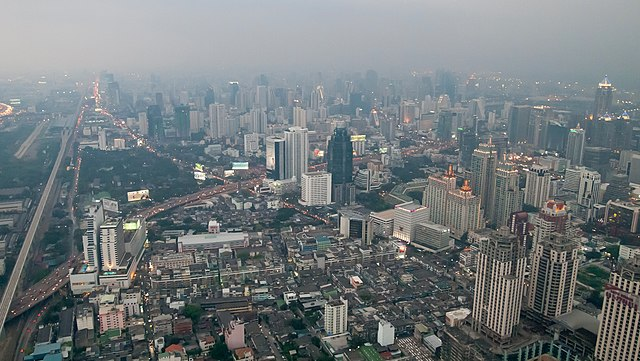
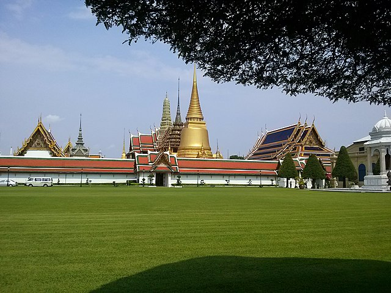
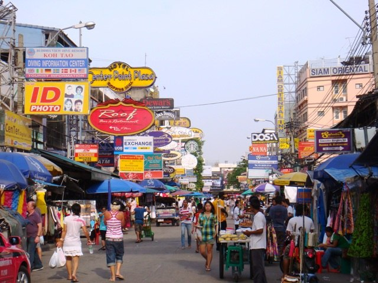

Ville de Bangkok
Bangkok la magnifique
Bangkok, la métropole tentaculaire de la Thaïlande, est une ville où se mêlent harmonieusement tradition et modernité. Vibrante et captivante, elle offre une expérience urbaine unique à ses visiteurs, avec ses temples dorés étincelants, ses marchés animés, sa cuisine délicieuse et sa vie nocturne trépidante.
Au cœur de Bangkok se trouve le majestueux Grand Palais, un complexe architectural qui abrite le temple du Bouddha d'Émeraude, l'une des statues les plus sacrées de Thaïlande. Avec ses toits dorés, ses peintures murales exquises et ses jardins bien entretenus, le Grand Palais est un véritable joyau de l'architecture thaïlandaise.
Les temples bouddhistes sont omniprésents à Bangkok, témoignant de la profonde spiritualité de la ville. Le Wat Pho, célèbre pour son immense statue couchée du Bouddha, est un lieu de prière et de méditation pour les fidèles et les visiteurs. Le Wat Arun, avec sa silhouette élancée et ses tuiles colorées, offre une vue imprenable sur la rivière Chao Phraya au coucher du soleil.
La vie nocturne de Bangkok est légendaire, avec ses bars animés, ses discothèques branchées et ses spectacles de cabaret extravagants. Le quartier de Khao San Road, avec ses bars bon marché et son ambiance animée, est un lieu de prédilection pour les fêtards du monde entier.
Bangkok est une ville où l'ancien et le moderne se côtoient, offrant une expérience urbaine dynamique et captivante à chaque coin de rue. Que ce soit pour explorer ses trésors culturels, savourer sa délicieuse cuisine ou faire la fête jusqu'au petit matin, Bangkok ne manque jamais d'impressionner et d'inspirer ses visiteurs.
Découvrir plus sur l'Asie